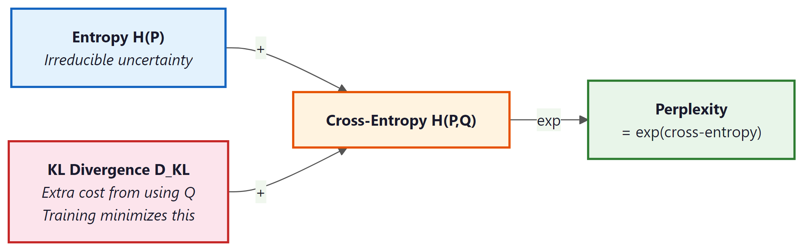

4.1.2 Information Theory: The Language of Learning
Before diving into the Transformer's mechanics, we need the mathematical vocabulary that describes how well a model is learning. Every time you see a training loss curve, a perplexity score, or a KL divergence penalty in Section 20.1, you are looking at information theory at work. Claude Shannon formalized these ideas in 1948, and they remain the foundation of how we measure, train, and evaluate language models.
We introduce information theory now because the Transformer's training objective (cross-entropy loss) and its evaluation metric (perplexity) both come directly from these concepts. Understanding them first will make every subsequent discussion of training, loss landscapes, and model comparison more concrete.
4.1.2.1 Entropy: Measuring Uncertainty
Entropy quantifies how much uncertainty (or "surprise") a random variable carries. For a discrete random variable X with possible outcomes x and probabilities P(x):
The unit is bits when we use log base 2. Each bit represents one yes/no question needed to determine the outcome.
Example: the coin flip. A fair coin has P(heads) = P(tails) = 0.5:
One bit: you need exactly one yes/no question ("Is it heads?") to determine the result. Now consider a loaded coin with P(heads) = 0.9, P(tails) = 0.1:
Less uncertainty means lower entropy. You already have a strong guess (heads), so less information is needed to pin down the outcome.
Entropy is maximized when all outcomes are equally likely, and minimized (zero) when the outcome is certain. For language, high entropy means the next token is hard to predict; low entropy means the model is confident. A perfect language model's entropy would match the true entropy of the language.
4.1.2.2 Cross-Entropy: The Loss We Minimize
In practice, we do not know the true distribution P of natural language. Instead, our model defines a learned distribution Q. Cross-entropy measures how many bits the model Q needs to encode data drawn from the true distribution P:
When Q matches P perfectly, cross-entropy equals entropy: H(P, P) = H(P). Any imperfection in Q pushes cross-entropy higher than entropy. The gap between them is the KL divergence (see below).
In LLM training, P is the one-hot distribution over the correct next token, and Q is the model's softmax output. This simplifies cross-entropy to:
If the model assigns probability 0.9 to the correct token, the loss is about 0.15 bits. If it assigns only 0.01, the loss jumps to about 6.64 bits. Small probabilities get magnified dramatically, which is why the model learns quickly from confident mistakes. (The magnification table in Section 4.4 illustrates this effect in detail.)
4.1.2.3 Perplexity: An Intuitive Scorecard
Perplexity converts cross-entropy into a more interpretable number:
Perplexity of 100 means the model is, on average, "as confused as if it were choosing uniformly among 100 equally likely options" at every token. Lower is better. A perfect model on English text would have a perplexity equal to 2H(English), roughly estimated at 20 to 50 depending on the domain.
Historical landmarks help calibrate intuition:
- GPT-2 (2019, 1.5B parameters): perplexity around 30 on standard benchmarks.
- GPT-3 (2020, 175B parameters): perplexity around 20, a significant improvement.
- Modern frontier models: perplexities in the low teens on common benchmarks, though exact numbers depend heavily on the evaluation dataset.
4.1.2.4 KL Divergence: Measuring the Gap
Kullback-Leibler divergence measures how much extra cost (in bits) we pay by using the approximate distribution Q instead of the true distribution P:
Three essential properties:
- Non-negative: $D_{\operatorname{KL}}$ ≥ 0, with equality only when P = Q.
- Not symmetric: $D_{\operatorname{KL}}$(P || Q) ≠ $D_{\operatorname{KL}}$(Q || P) in general. The direction matters.
- Decomposes cross-entropy: Cross-entropy = Entropy + KL divergence. Minimizing cross-entropy is equivalent to minimizing KL divergence, since entropy (of the true distribution) is a constant we cannot change.
In Chapter 20 (RLHF and alignment), KL divergence plays a critical role: the reward model encourages the fine-tuned policy to improve, while a KL penalty keeps it from straying too far from the base model. Without this constraint, the model can "hack" the reward signal by producing degenerate outputs that score high on the reward model but are incoherent.
4.1.2.5 Mutual Information (Brief)
Mutual information I(X; Y) measures how much knowing one variable reduces uncertainty about another:
If X and Y are independent, mutual information is zero. If knowing X completely determines Y, mutual information equals H(Y). In the context of LLMs, mutual information appears in probing studies (Chapter 11), where researchers measure how much information about a linguistic property (syntax, semantics) is captured in the model's hidden representations. It also informs information-theoretic evaluation metrics that go beyond simple perplexity.
4.1.2.6 Code Example: Computing the Metrics
The following code computes entropy, cross-entropy, and perplexity for a toy probability distribution.
# Entropy, cross-entropy, and perplexity from scratch with NumPy.
# Perplexity = 2^H; lower means the model is less "surprised" by the data.
import numpy as np
# --- Entropy ---
def entropy(probs):
"""H(X) = -sum P(x) log2 P(x), ignoring zero probabilities."""
probs = np.array(probs, dtype=np.float64)
mask = probs > 0
return -np.sum(probs[mask] * np.log2(probs[mask]))
fair_coin = [0.5, 0.5]
loaded_coin = [0.9, 0.1]
print(f"Fair coin entropy: {entropy(fair_coin):.4f} bits") # 1.0000
print(f"Loaded coin entropy: {entropy(loaded_coin):.4f} bits") # 0.4690
# --- Cross-Entropy ---
def cross_entropy(p, q):
"""H(P, Q) = -sum P(x) log2 Q(x)."""
p, q = np.array(p, dtype=np.float64), np.array(q, dtype=np.float64)
mask = p > 0
return -np.sum(p[mask] * np.log2(q[mask]))
# True distribution vs. model prediction
p_true = [0.0, 1.0, 0.0] # correct token is index 1
q_good = [0.05, 0.90, 0.05] # confident model
q_bad = [0.30, 0.40, 0.30] # uncertain model
print(f"\nCross-entropy (good model): {cross_entropy(p_true, q_good):.4f} bits") # 0.1520
print(f"Cross-entropy (bad model): {cross_entropy(p_true, q_bad):.4f} bits") # 1.3219
# --- Perplexity ---
def perplexity(p, q):
"""Perplexity = 2^(cross-entropy)."""
return 2 ** cross_entropy(p, q)
print(f"\nPerplexity (good model): {perplexity(p_true, q_good):.2f}") # 1.11
print(f"Perplexity (bad model): {perplexity(p_true, q_bad):.2f}") # 2.50
# --- KL Divergence ---
def kl_divergence(p, q):
"""D_KL(P || Q) = sum P(x) log2(P(x) / Q(x))."""
p, q = np.array(p, dtype=np.float64), np.array(q, dtype=np.float64)
mask = p > 0
return np.sum(p[mask] * np.log2(p[mask] / q[mask]))
p_lang = [0.7, 0.2, 0.1]
q_model = [0.5, 0.3, 0.2]
print(f"\nKL divergence D_KL(P||Q): {kl_divergence(p_lang, q_model):.4f} bits")
# Verify: cross-entropy = entropy + KL
ce = cross_entropy(p_lang, q_model)
h = entropy(p_lang)
kl = kl_divergence(p_lang, q_model)
print(f"H(P,Q)={ce:.4f} H(P)={h:.4f} D_KL={kl:.4f} H(P)+D_KL={h+kl:.4f}")4.1.2.7 Visualizing the Relationships

4.1.2.8 Comparison Table
| Metric | Formula | Interpretation | Where Used in This Book |
|---|---|---|---|
| Entropy | H(P) = −∑ P(x) $log_{2}$ P(x) | Inherent uncertainty in the true distribution | Theoretical lower bound on loss (Sec. 4.1, Chapter 19) |
| Cross-Entropy | H(P,Q) = −∑ P(x) $log_{2}$ Q(x) | Cost of encoding P using model Q | Training loss for all LLMs (Chapters 4, 8, 14) |
| Perplexity | 2H(P,Q) | Effective vocabulary size of model's uncertainty | Evaluation metric (Chapters 5, 14, 15) |
| KL Divergence | ∑ P(x) $log_{2}$[P(x)/Q(x)] | Extra bits wasted by using Q instead of P | RLHF penalty (Chapter 20), distillation (Chapter 19) |
| Mutual Information | H(X) + H(Y) − H(X,Y) | Shared information between two variables | Probing studies (Chapter 11), information-theoretic eval |